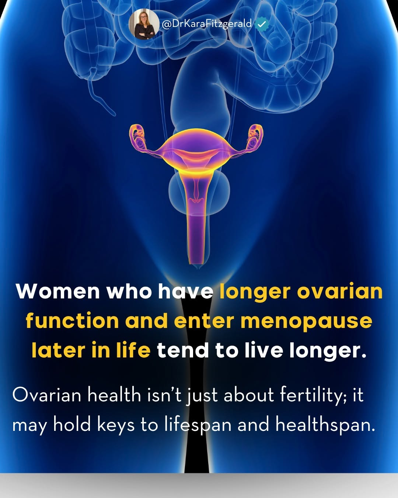

Ovarian aging may track lifespan; early menopause raises heart disease risk in women
Louis shares a Pharmacy Times item suggesting ovarian function is tied to lifespan, with anti-Mullerian hormone (AMH) a possible marker. He adds that ovaries are the first organ to age in mammals, slower ovarian aging relates to longer life, and early menopause is a heart disease risk factor; rodent studies show interventions slowing ovarian aging extend life.